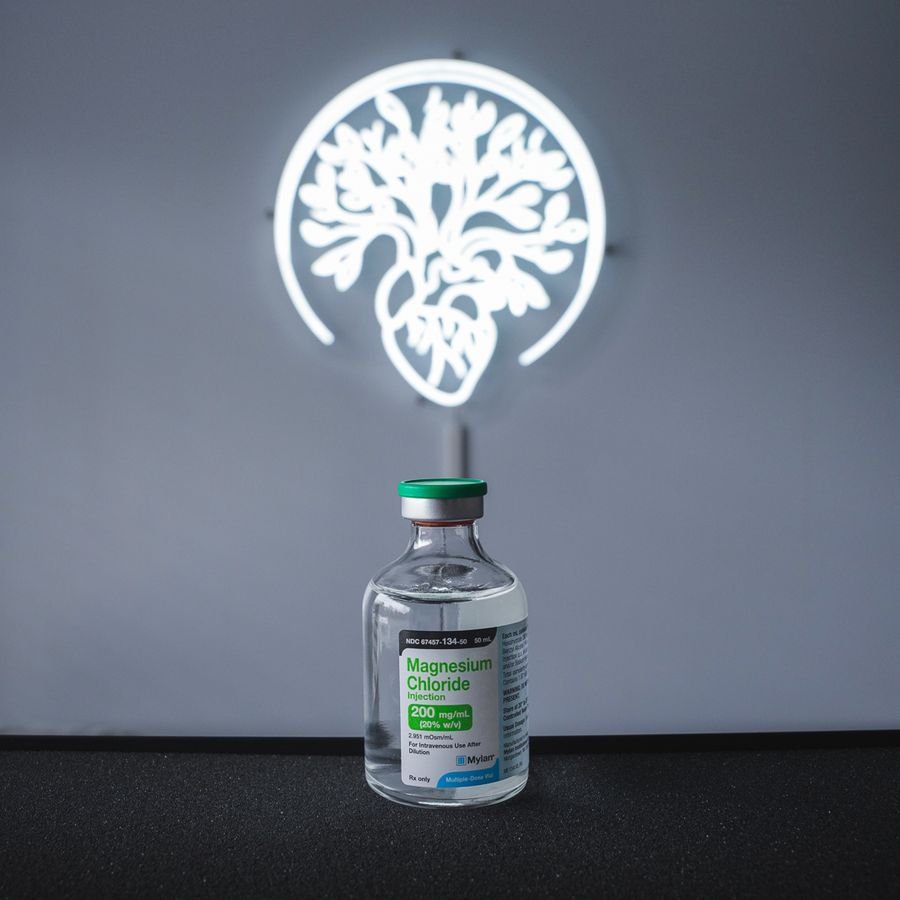

Lab-matched plans
We recommend supplements based on your bloodwork, not whatever is trending this month.
Start with labs →Natural Health & Supplements
Practitioner-grade supplements matched to your bloodwork and goals at Asylum Natural Health in Voorhees, NJ.
 Quality you can trust
Quality you can trustAsylum Natural Health
Stop guessing in the supplement aisle. Asylum Natural Health curates professional-grade product lines and matches them to your bloodwork and goals, not whatever is trending this month.
Why it is different
We recommend supplements based on your bloodwork, not whatever is trending this month.
Start with labs →Third-party tested, practitioner-trusted brands held to a higher standard than retail shelves.
Talk to someone who can explain interactions, timing, and what to actually expect.

Part of the collective
Because supplements live alongside labs, IVs, and coaching, your stack is never random. Low on vitamin D? We see it on your panel and address it. Pushing hard in coaching? Your recovery support is built in. It is the difference between buying products and following a plan.
Visit Asylum Natural Health and build a supplement plan that fits your labs and goals.